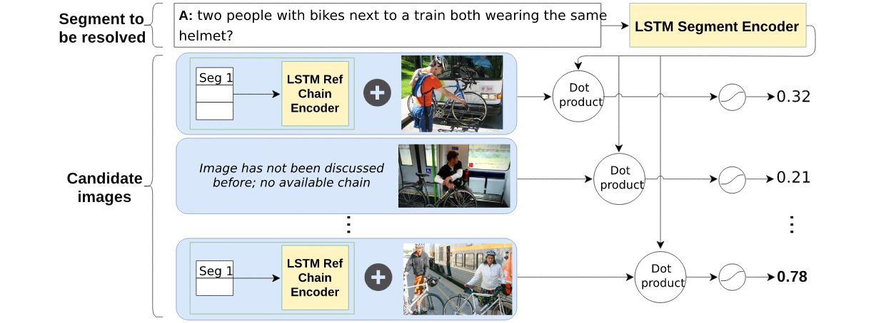
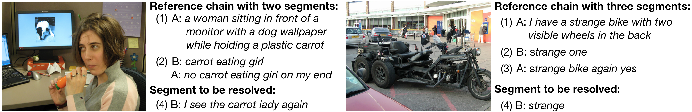

Models
Using the automatically extracted dialogue segments, we develop a reference resolution model that aims at identifying the target images referred to in a dialogue segment. We hypothesise that later segments within a reference chain might be more difficult to resolve, because they rely on referring expressions previously established by the dialogue participants. As a consequence, a model that is able to keep track of the common ground should be less affected by this effect. To investigate these issues, we experiment with two conditions: In the NO-HISTORY condition, the model only has access to the current segment and to the visual features of each of the candidate images. In the HISTORY condition, on the other hand, the model also has access to the previous segments in the reference chain associated with each of the candidate images, containing the linguistic common ground built up by the participants. We keep our models very simple. Our aim is to propose baselines against which future work can be compared.Our resolution model encodes the linguistic features of the dialogue segment to be resolved with a recurrent neural network with Long Short-Term Memory (LSTM, Hochreiter and Schmidhuber, 1997). The last hidden state of the LSTM is then used as the representation for the dialogue segment. For each candidate image in the context, we obtain image features using the activations from the penultimate layer of a ResNet-152 (He et al., 2016) pre-trained on ImageNet (Deng et al., 2009). These image features, which are of size 2048, are projected onto a smaller dimension equal to the hidden dimension of LSTM units. Projected image features go through ReLU nonlinearity and are normalised to unit vectors. To assess which of the candidate images is a target, in the NO-HISTORY condition we take the dot product between the dialogue segment representation and each image feature vector, ending up with scalar predictions for all N images in the context: s = {s0, ..., sN }.
 For the HISTORY condition, we propose a simple mechanism for taking into account linguistic common ground about each image. For each candidate image, we consider the sequence of previous segments within its reference chain. This shared linguistic background is encoded with another LSTM, whose last hidden state is added to the corresponding image feature that was projected to the same dimension as the hidden state of the LSTM. The resulting representation goes through ReLU, is normalised, and compared to the target dialogue segment representation via dot product, as in NO-HISTORY.
As an ablation study, we train a HISTORY model without visual features. This allows us to establish a baseline performance only involving language and to study whether the HISTORY model with visual features learns an efficient multi-modal representation. We hypothesise that some descriptions can be successfully resolved by just comparing the current segment and the reference chain in the history (e.g., when descriptions are detailed and repeated). However, performance should be significantly lower than with visual features, for example when referring expressions are ambiguous.
Sigmoid is applied element-wise over the scalar predictions in all three models. As a result, each image can be assessed independently using a decision threshold (set to 0.5). This allows the model to predict multiple images as referents.We use Binary Cross Entropy Loss to train the models. Since distractor images make up 84.74% of the items to be classified in the training set and target images constitute only the 15.26% of them, we provided 84.74/15.26 ≈ 5.5 as the weight of the target class in the loss function.
All models were implemented in PyTorch, trained with a learning rate of 0.001 and a batch size of 512. The dimension of the word embeddings and the hidden dimensions of the LSTM units were all set to 512. The parameters were optimised using Adam (Kingma and Ba, 2014). The models were trained until the validation loss stopped improving, after which we selected the model with the best weighted average of the target and non-target F-scores.
Results
The following table reports precision, recall, and F-score for the identification of the target images:| Model | Precision | Recall | F1 |
|---|---|---|---|
| Random baseline | 15.34 | 49.95 | 23.47 |
| NO-HISTORY | 56.65 | 75.86 | 64.86 |
| HISTORY | 56.66 | 77.41 | 65.43 |
| HISTORY/No image | 35.66 | 63.18 | 45.59 |
For a more in-depth analysis of the results, we examine how precision and recall vary depending on the position of the to-be-resolved segment within a reference chain. As hypothesised, we observe that resolution performance is lower for later segments in a reference chain. For example, while precision is close to 60% for first mentions (position 1 in a chain), it declines by around 20 points for last mentions.
The HISTORY model yields higher results than the NOHISTORY model when it comes to resolving segments that refer to an image that has already been referred to earlier within the dialogue (positions > 1). Yet, the presence of linguistic context does not fully cancel out the effect observed above: The performance of the HISTORY model also declines for later segments in a chain, indicating that more sophisticated methods are needed to fully exploit shared linguistic information. Experiments with the HISTORY model without visual features (HISTORY/No image) confirm our hypothesis. The HISTORY model outperforms the “blind” model by about 21 points in precision and 14 points in recall. We thus conclude that even our simple fusion mechanism already allows for learning an efficient multimodal encoding and resolution of referring expressions.
Qualitative Analysis
The quantitative dataset analysis showed that referring expressions become shorter over time, with interlocutors being most likely to retain nouns and adjectives. Qualitative inspection of the reference chains reveals that this compression process can lead to very nonstandard descriptions. We hypothesise that the degree to which the compressed descriptions rely on visual information has an impact on the performance of the models. For example, the NOHISTORY model can be effective when the participants converge on a non-standard description which highlights a visual property of the target image that clearly discriminates it from the distractors. This is the case in the example shown on the left-hand side of the following figure: The target image shows a woman holding what seems to be a plastic carrot. This feature stands out in a domain where all the candidate images include a person and a TV. After an initial, longer description (‘a woman sitting in front of a monitor with a dog wallpaper while holding a plastic carrot’), the participants use the much more compact description ‘the carrot lady’. Arguably, given the saliency of the carrot in the given context, relying on the preceding linguistic history is not critical in this case, and thus both the NO-HISTORY and the HISTORY model succeed in identifying the target.
We observe that the HISTORY model is particularly helpful when the participants converge on a non-standard description of a target image that cannot easily be grounded on visual information. The image and reference chain on the right-hand side of the figure above illustrate this point, where the description to be resolved is the remarkably abstract ‘strange’. Here the HISTORY model succeeds while the NO-HISTORY model fails. As in the previous example, the referring expression in the first segment of the reference chain for this image (‘a strange bike with two visible wheels in the back’) includes more descriptive content – indeed, it is similar to a caption, as shown by our analysis in Section 5.3. By exploiting shared linguistic context, the HISTORY model can not only interpret the non-standard phrase, but also recover additional properties of the image not explicit in the segment to be resolved, which presumably help to ground it.
All files necessary for running the image discriminator model as presented in the ACL paper can be found on github here. The pre-trained models that produced the numbers shown in the paper can be downloaded from github here.
The README for the discriminator models can be viewed here.
References
- He He, Anusha Balakrishnan, Mihail Eric, and Percy Liang. 2017. Learning symmetric collaborative dialogue agents with dynamic knowledge graph embeddings. In Proceedings of ACL.
- Sepp Hochreiter and Jurgen Schmidhuber. 1997. ¨ Long short-term memory. Neural Computation, 9(8):1735–1780.
- Diederik P. Kingma and Jimmy Ba. 2014. Adam: A method for stochastic optimization. CoRR, abs/1412.6980